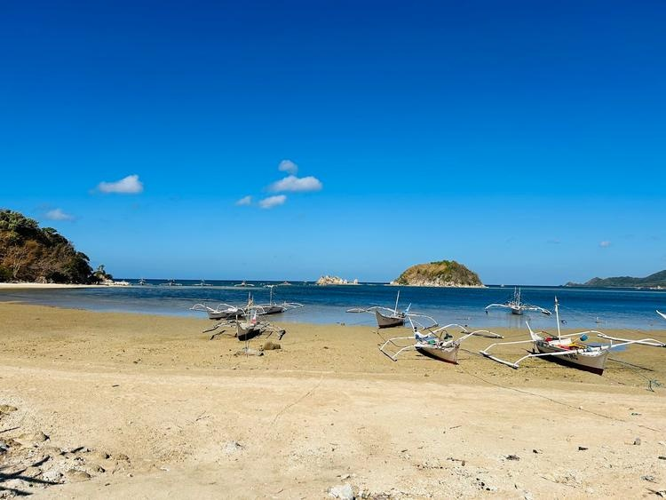
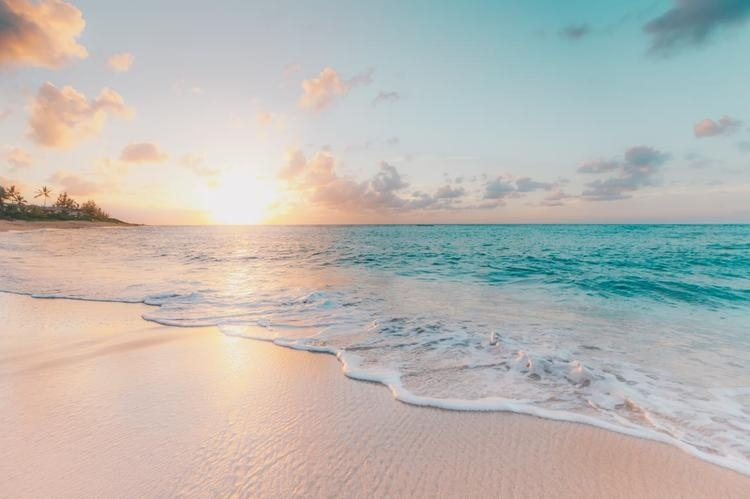
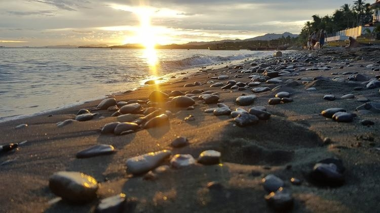
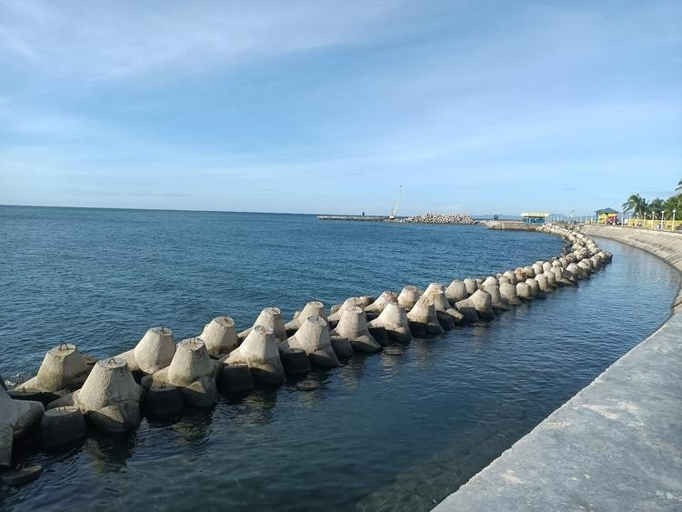

Baras Beach offers a quiet and peaceful coastal escape. It's also a serene and tranquil destination in Guimbal, Philippines.
It boasts fine, creamy sand and offers a peaceful escape from daily life. Known for its breathtaking sunsets, the beach is ideal for relaxing strolls and offers
a cozy atmosphere. However, it lacks extensive amenities, making it less crowded and perfect for those seeking solitude.
One of the unique aspects of Baras Beach is its relative obscurity, which has helped preserve its natural beauty. This seclusion strengthens the bond between
regular visitors and locals, creating a warm community atmosphere that adds to its charm.
The nearby area is rich in history and culture, with attractions like the Guimbal Plaza and Guimbal Church, offering insights into the region's heritage.

2. 🏖️ Bantayan Beach
Philippines, Western Visayas, Guimbal
Bantayan Beach in Guimbal, Western Visayas, Philippines, offers a serene and picturesque getaway with its long boulevards and scenic views. The beach is suitable for swimming, though it's known to have jellyfish at times. It's a popular spot for family and friends to gather and enjoy the peaceful atmosphere.
The beach area features a clean environment, making it perfect for relaxation and casual gatherings. Its proximity to century-old landmarks adds a touch of history to the experience. Overall, Bantayan Beach is an ideal place to enjoy the beauty of nature with loved ones, offering a tranquil and refreshing ambiance.

3. 🏖️ Bato Bukay Beach Resort
Philippines, Western Visayas, Guimbal
Bato Bukay is a serene beach located in Guimbal, Iloilo, Philippines, offering a unique coastal experience with its tranquil atmosphere. It boasts light brown to golden sand complementing the azure waters of the Panay Gulf, providing a picturesque setting for relaxation and recreation.
The beach provides a quiet environment perfect for family gatherings or solo travelers looking to unwind in nature. Its proximity to other tourist spots in Guimbal such as historical sites and local attractions makes it an excellent stopover or base for explorers.

4. 🏖️ Evelyn's Beach Resort
Philippines, Western Visayas, Guimbal
Evelyn's Beach offers a serene and idyllic getaway. This coastal gem is known for its extensive shoreline, providing ample space for relaxation and leisure. Situated about an hour's drive southwest from Iloilo City, it offers an accessible yet peaceful escape from urban life.
The area is rich in natural beauty, with open spaces perfect for picnics or sunset viewing. While it offers a quiet beachfront experience, the nearby town provides easy access to local cuisine and cultural attractions. It is well-suited for families, couples, and solo travelers alike a place where nature lovers can appreciate scenic views and tranquility.
5. 🏖️ Laciport Beach Resort
Philippines, Western Visayas, Guimbal
Laciport Beach Resort nestled in Guimbal, Iloilo, offers a serene escape with its stunning coastline and captivating golden sand. Visitors can enjoy leisurely beach strolls, volleyball matches, sunbathing, or building sandcastles. Despite its tranquil atmosphere, amenities are modest making it ideal for those seeking an undisturbed, authentic beach experience.
The vicinity is home to various restaurants and hotels catering to different tastes. Its proximity to Guimbal town ensures easy access to local culture, dining, and heritage sites.

6. 🏖️ Tessie Beach Resort
Philippines, Western Visayas, Guimbal
Tessie Beach is a serene coastal destination offering a tranquil experience amidst the vibrant culture of Iloilo. The area is known for stunning beaches and scenic views, perfect for relaxation and leisure. Visitors can enjoy fresh local seafood and a variety of dining options nearby.
The beach vicinity is dotted with resorts and hotels ensuring a comfortable stay. Swimming and water sports are popular activities, and the friendly local community plus rich cultural heritage make it an ideal place to explore and unwind.